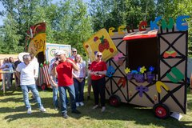
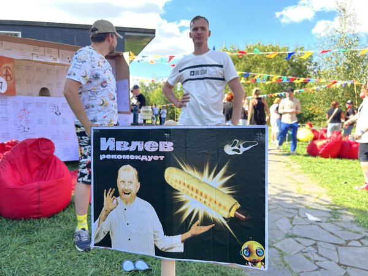
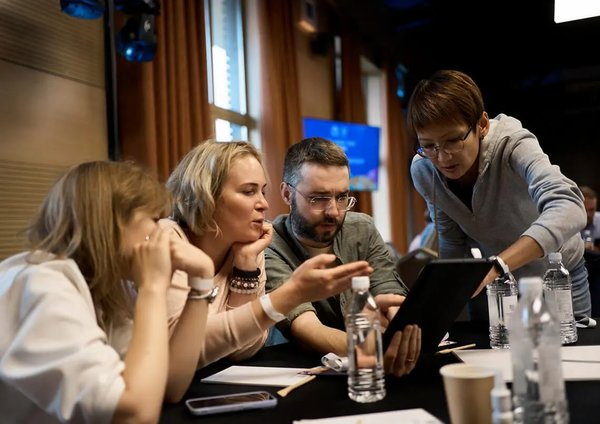
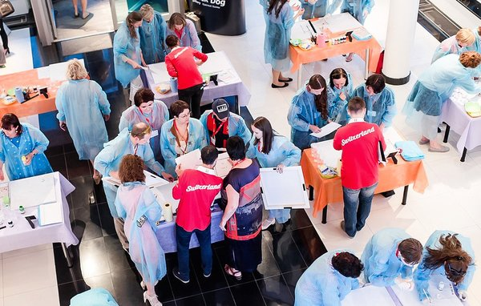

Материал для публикации на Advertology. Word-файл: katalist-ivent-kotoryj-ostaetsya.docx. Изображения лежат в этой же папке: anons-240x160.jpg, foto-1.jpg, foto-2.jpg, foto-3.jpg.
Как заложить в бриф корпоративного ивента ролики, картины и истории, которые останутся у бренда работодателя и внутренних коммуникаций после праздника.

anons-240x160.jpg: Расписные картонные фудтраки команд на тимбилдинге «Фестиваль фудтраков»
Обычно маркетолог узнаёт о корпоративном ивенте, когда тот уже закончился. Отдел персонала присылает фотоотчёт, отдел коммуникаций публикует пост во внутреннем канале, и через неделю о празднике никто не вспоминает. Компания заплатила за день, а получила один альбом фотографий.
Если подключиться на этапе брифа и задать агентству вопрос «что останется после ивента», после того же ивента у компании остаётся материал для бренда работодателя: ролики, которые сняли сами сотрудники, картину для офиса, календарь компании, видео флешмоба, истории для корпоративного канала.
Я Мария Варламова, генеральный директор ивент-агентства «Каталист». За 15 лет мы провели больше 5 000 проектов, у нас 50+ программ и 16 наград, в том числе BEMA за тимбилдинг с нейросетями в 2025 году. Ниже разберу, какие форматы оставляют после себя контент и что маркетологу записать в бриф, чтобы этот контент появился.
Ивент-агентство отвечает на бриф программой: что произойдёт с 15:00 до 19:00. Для маркетолога важнее другое: что останется у компании на следующий день. Я делю такие результаты на четыре типа.
Видео. Команды снимают ролики или вместе выполняют постановку, которую потом монтируют.
Предмет. Картина, календарь, аромат в упаковке: вещь, которая живёт в офисе или у сотрудника дома.
Продукт команды. Бренд, реклама, трек, стартап, которые команда придумала и защитила перед залом.
История. Что люди делали сверх программы. Её не запланируешь, но под неё можно оставить место.
В обычном банкете с ведущим нет ни одного из четырёх. В командной игре, где люди что-то создают, есть хотя бы два.
Финансовая дирекция «Райффайзенбанка» заказала нам летний тимбилдинг на 350 человек. В брифе банк сослался на опрос: рядовые сотрудники выбирали творчество, кулинарию и сборку конструкций, тогда как начальники отделов и эйчары просили бизнес-задачи.
Мы собрали всё это в одну игру, «Фестиваль фудтраков». 20 команд построили каждая свой фудтрак, придумали ему название и кухню, раскрасили, приготовили еду, назначили цены и продавали блюда за игровую валюту.
Для маркетолога это 20 маленьких брендов за один день: у каждого вывеска, слоганы, реклама и цены. Ещё интереснее то, что участники сделали без нашей подсказки. Кто-то нанимался поваром к соседям. Кто-то за игровые деньги зазывал покупателей к чужим прилавкам. Одна сотрудница превратила себя в ходячую рекламу с картонным щитом, а одна команда притащила диваны и открыла рядом с фудтраком летнее кафе.
Каждый такой эпизод готов стать заметкой для корпоративного канала: знакомые лица, юмор, понятный сюжет. Его не нужно придумывать, его нужно заметить и снять.

foto-1.jpg: Участники «Фестиваля фудтраков» у шуточного рекламного постера
Потом банк возвращался к этому формату ещё трижды. У проекта появилась и внешняя история: из 10 номинантов «Тимбилдинга года» на премии «Событие года» победил он, а позже его отобрали в короткий список «Золотого пазла». Для пиар-отдела это отдельный информационный повод: внутренний праздник компании стал отраслевым кейсом.
Если задача брифа звучит как «нужен контент для бренда работодателя», я бы смотрела на программы, где у каждой команды на выходе есть продукт. Вот несколько наших.
Ролики. В тимбилдинге «Каннские Львы» команды придумывают, снимают и монтируют рекламные ролики, потом смотрят их на большом экране и получают награды в номинациях. Группа от 50 до 200 человек. После вечера у компании набор коротких видео, где сотрудники играют главные роли.
Бренд и реклама с нейросетями. В «Стартапе с нейросетями» команды создают бренд, айдентику и рекламу с помощью ChatGPT и Midjourney и питчат проект инвесторам. В «Музыкальном лейбле» пишут текст песни, придумывают название группы, записывают трек с нейросетью и исполняют его на сцене. Треки и питчи потом можно выложить во внутренний канал целиком.

foto-2.jpg: Команды на тимбилдинге «Каннские Львы» обсуждают задание у ноутбука и планшета
Предмет для офиса. В «Корпоративной картине» команды рисуют части одной большой картины и не знают общего сюжета. Сюжет мы придумываем под сферу клиента, поэтому в картину можно вложить ценности или историю компании. Готовую работу вешают в офисе. В «Нейро календаре» каждая команда создаёт с нейросетью один месяц, и из месяцев собирается общий календарь компании на год.
Видео всей компании. В «Корпоративном флешмобе» участники придумывают режиссёрскую задумку и вместе с нашей командой выполняют построения: волны, эффект трансформеров. Из съёмки монтируют видео. Это формат для большой группы, когда нужен один общий кадр.
Бренд своими руками. В «Парфюмерном бренде» команда сначала создаёт аромат и стратегию бренда, а потом каждый участник собирает свой аромат из масел и эссенций. Аромат в тематической упаковке уезжает домой.

foto-3.jpg: Тимбилдинг «Корпоративная картина»: команды рисуют свои части общей картины, вид сверху
Эти пункты я советую добавить в бриф к обычным вопросам о дате, числе гостей и бюджете.
Где будет жить результат. Внутренний канал, интранет, карьерный сайт, стена в офисе, отраслевая премия. От ответа зависит формат: для карьерного сайта нужны горизонтальные ролики, для стены в офисе нужен предмет.
Кто снимает и что. Фотограф снимает праздник, но не всегда снимает процесс: как команда спорит над слоганом или собирает конструкцию. Для историй нужен именно процесс. Запишите в бриф, какие моменты снять обязательно и в какие сроки агентство отдаёт материалы.
Согласие сотрудников на публикацию. Если ролики команд пойдут во внешние каналы, это нужно согласовать с юристом и отделом персонала до ивента, а не после.
Ключевые сообщения бренда. Сюжет игры можно настроить под компанию: тему картины, задание для роликов, название стартапа. Дайте агентству три сообщения, которые хотите видеть в результате.
Мнение сотрудников. Короткий опрос до брифа показывает, чего ждут люди. В примере с банком опрос развёл пожелания сотрудников и руководителей, и мы искали формат, который совмещает оба запроса.
Место для импровизации. Истории вроде летнего кафе у фудтрака появляются там, где у команды есть свобода. Не прописывайте в задании каждый шаг.
В кейсе с фудтраками никто не измерял, остались ли сотрудники в компании дольше и стали ли активнее. Данных о том, как контент с ивентов влияет на найм или охваты, у нас тоже нет, поэтому обещать здесь цифры я не могу.
Ивент даёт сырьё: съёмку, предметы, истории. Превратить его в работающий бренд работодателя может только сама компания: регулярно публиковать, связывать с ценностями, возвращаться к материалу через месяц и через полгода. Если внутри нет человека, который этим займётся, ролик останется в папке «Фото с корпоратива».
И ещё одно ограничение. Если сотрудникам не хватает денег или сил, ролик о командном дне это не исправит, а может вызвать раздражение. Контент работает там, где ему есть на что опереться.
Маркетологу стоит подключиться к брифу корпоративного ивента до того, как его отправят агентству, и задать один вопрос: что останется у компании после праздника. Выбирать формат, где команды создают продукт. Заранее решить, где этот продукт будет жить, кто его снимет и какие сообщения бренда в нём должны прозвучать. Тогда после ивента у компании будет что публиковать.
Мария Варламова, генеральный директор ивент-агентства «Каталист»